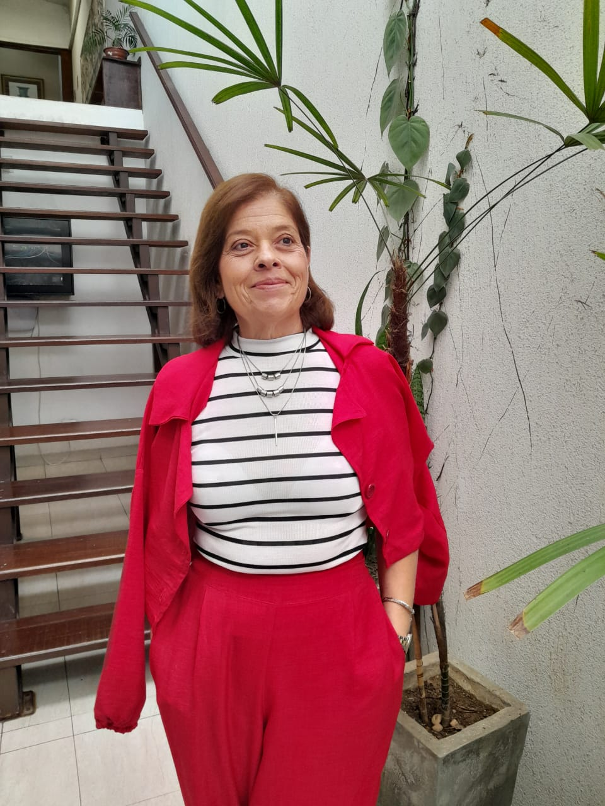

Quem Somos
Atuamos com excelência no Direito do Trabalho, oferecendo assessoria jurídica dedicada e humanizada.


Helena Cecília Scasni - Especialista em Direito do Trabalho
Maria de Fátima Francisco - Especialista em Direito do Trabalho